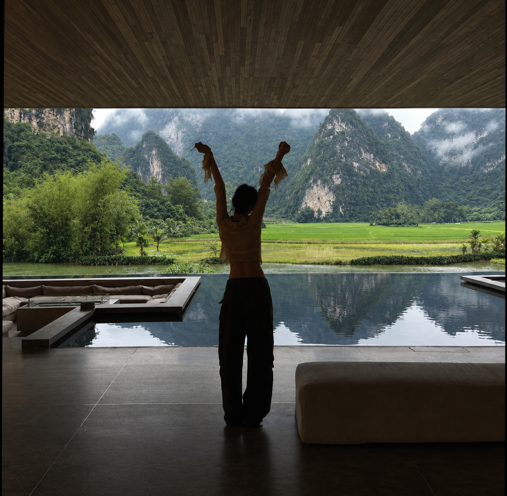
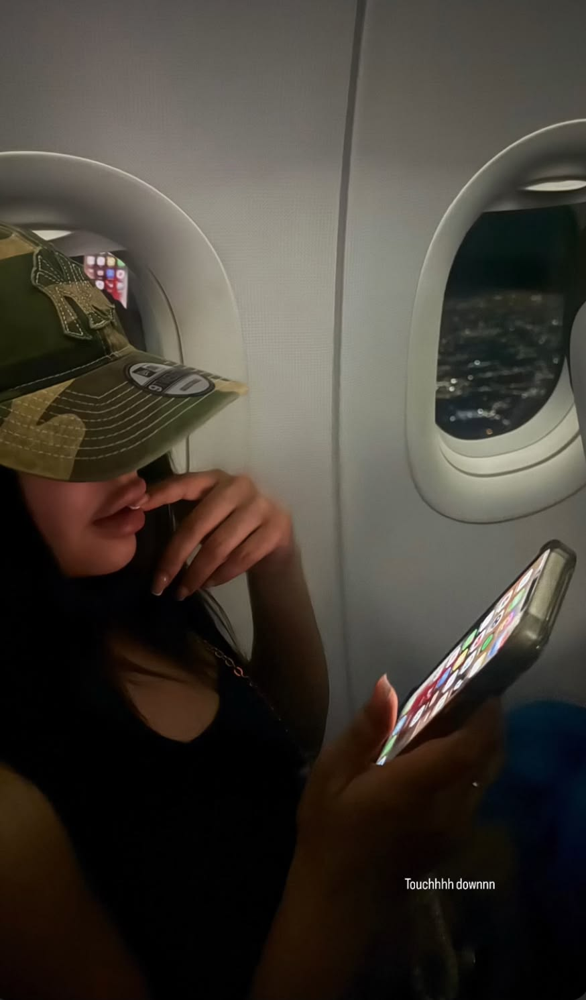
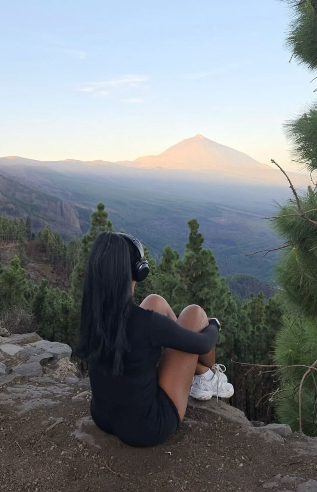

Slides apiladas con tu deseo, ritual con audio, racha diaria y portal de visión. Gratis: ritual 3/día, creador 3/semana. Pro: ilimitado.
DESCARGAR APK


18 preguntas que construyen tu visión: dolor, deseo, áreas, ciudad, pareja ideal.
Audio de 2 minutos que ataca tu dolor y prioriza tu manifestación.
La flor crece cada día que completas. A los 21 días, es hábito.